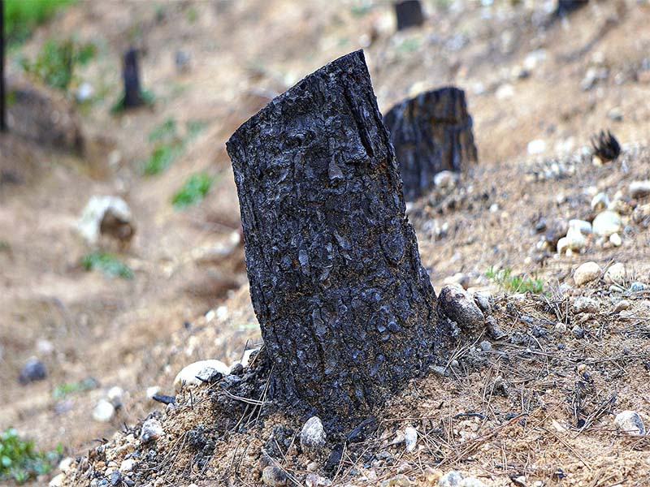

La degradación ambiental se constituye el Primer Jinete Apocalíptico en término de su relevancia para la destrucción de los ecosistemas a nivel local y global. En el presente trabajo se analizarán los factores causantes de la Degradación Ambiental, veremos como el ser humano, con sus actividades diarias es el principal depredador de los ecosistemas. Primeramente, podemos señalar que la degradación ambiental es el deterioro del medio ambiente mediante el agotamiento de recursos como el aire, el agua y el suelo; la destrucción de ecosistemas y la extinción de la vida silvestre. Se define como cualquier cambio o alteración del medio ambiente que se percibe como perjudicial o indeseable. Asimismo, puede definirse como el conjunto de procesos que deterioran o impiden la utilización de un determinado recurso, por parte de la humanidad. El deterioro ambiental está directamente relacionado con la forma en que un país desarrolla sus actividades económicas y con los procedimientos que emplea para explotar sus recursos naturales. Daena: International Journal of Good Conscience. 10(3)1-9. Diciembre 2015. ISSN 1870-557X 2 Como indica la ecuación I = PAT, impacto ambiental (I) o la degradación, es causada por la combinación de una grande y creciente población humana (P), aumentando continuamente el crecimiento económico o riqueza per cápita “afluencia” (A), y la aplicación de agotamiento de recursos y tecnología contaminante (T). Por lo tanto podemos decir que la Degradación Ambiental va de la mano con el aumento de población, el crecimiento económico y la tecnología. Recursos naturales afectados por la degradación ambiental en Méxicos recursos naturales afectados por la degradación ambiental son los siguientes:
La escasez, la contaminación y el mal uso son los grandes problemas del agua. La calidad del agua está afectada por diversos factores como los usos del suelo, la producción industrial y agrícola, el tratamiento que se le da antes de ser vertida nuevamente a los cuerpos de agua, y la cantidad misma en ríos y lagos, ya que de ésta depende su capacidad de purificación
La calidad del aire en una zona determinada, además de ser afectada por factores climáticos y geográficos, tiene una relación directa con el volumen de los contaminantes emitidos localmente a la atmósfera.
Se entiende por contaminación atmosférica a la presencia en el aire de materias o formas de energía que impliquen riesgo, daño o molestia grave para las personas y bienes de cualquier naturaleza, así como que puedan atacar a distintos materiales, reducir la visibilidad o producir olores desagradables
El suelo es considerado un recurso natural frágil y no renovable, debido a que resulta difícil y costoso recuperarlo o, incluso, mejorar sus propiedades después de haber sido erosionado por las fuerzas abrasivas del agua y el viento o deteriorado física o químicamente. El suelo realiza un gran número de funciones clave tanto ambientales como económicas, sociales y culturales que son esenciales para la vida. Es indispensable para la producción de alimentos y el crecimiento vegetal, almacena minerales, materia orgánica, agua y otras sustancias químicas y participa en su transformación; sirve de filtro natural para las aguas subterráneas; es hábitat de una gran cantidad de organismos; proporciona materias primas para la construcción (arcilla, arenas, minerales, etc.) y es un elemento del paisaje y del patrimonio cultural. La creciente demanda de alimentos para una población en crecimiento con patrones de consumo más intensos, constituye una enorme fuente de presión tanto sobre los ecosistemas naturales (para ser transformados en terrenos agrícolas o pecuarios), como sobre las tierras ya destinadas a estas actividades productivas, lo que favorece el deterioro del suelo.
{kind=link}